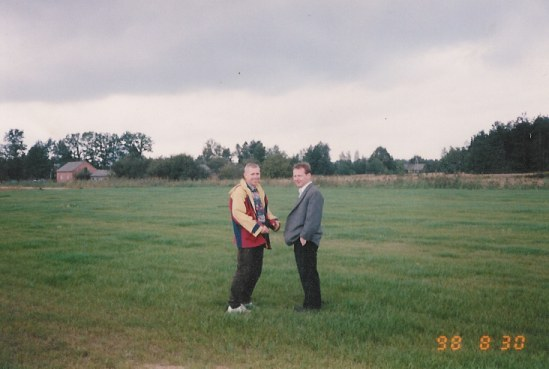

LKS "Sprint" Żarówka rok zał. 1999
Prezes klubu: Cichoń Janusz
Strona klubu: LKS SPRINT Żarówka
Parafia: Zdziarzec

Stoją od lewej: Deć Daniel, Bednarz Michał, Rydzy Łukasz, Pawelec Marcin, Kryczka Mariusz, Cichoń Andrzej, Cichoń Grzegorz, Czapiga Grzegorz. Na dole od lewej: Pęczek Krzysztof, Pęczek Marcin, Bajor Tomasz, Kawa Janusz, Mróz Tomasz, Drąg Piotr. Zdjęcie wykonano w 2007.
Zdjęcie wykonano 6 sierpnia 2000. Na stadionie w Żarówce przed zwycięskim meczem z Podlesiem Jastrząbskim (7:3). Stoją od lewej: Janusz Czuchra, Janusz Pryga, Marek Mróz, Jerzy Kokoszka, Zygmunt Pryga, Janusz Cichoń, Marcin Studiarz Klęczą od lewej: Sławomir Cichoń, Leszek Kokoszka, Grzegorz Czapiga, Grzegorz Idzik, Grzegorz Jagoda Nieobecni: Grzegorz Cichoń, Stanisław Pulak
Zdjęcie wykonano 6 sierpnia 2000. Kibice też dopisali, stoją: Ania Wnuk, za nią czołowy obrońca Stanisław Pulak (Ulo), Bartuś, Monika i Ela Wnuk, Staszek Pryga, Piotrek Gurda, siedzi Marian Mrozowski 
Tu narazie jest ściernisko, ale bedzie ... boisko. Stanisław Pryga i Jacek Moskalczyk. Zdjęcie wykonano 30 sierpnia 1998.